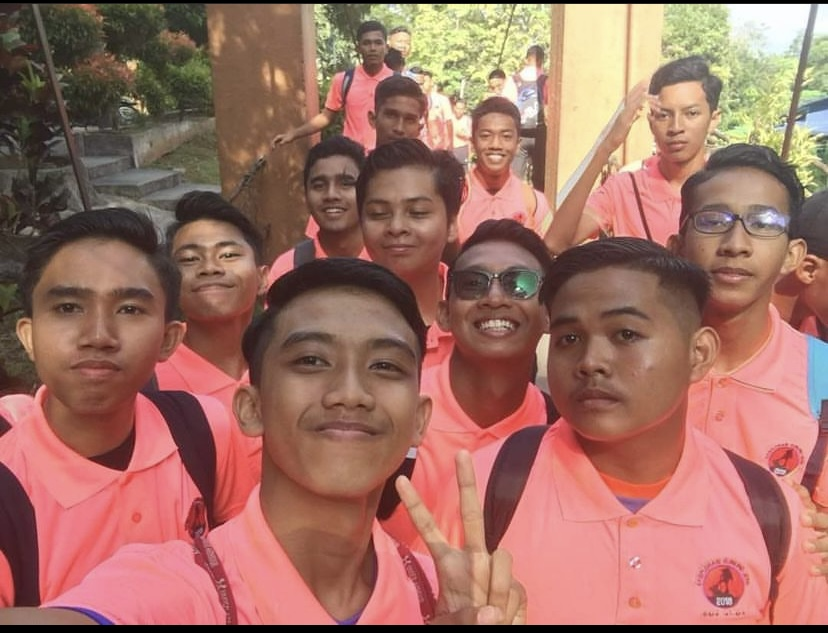
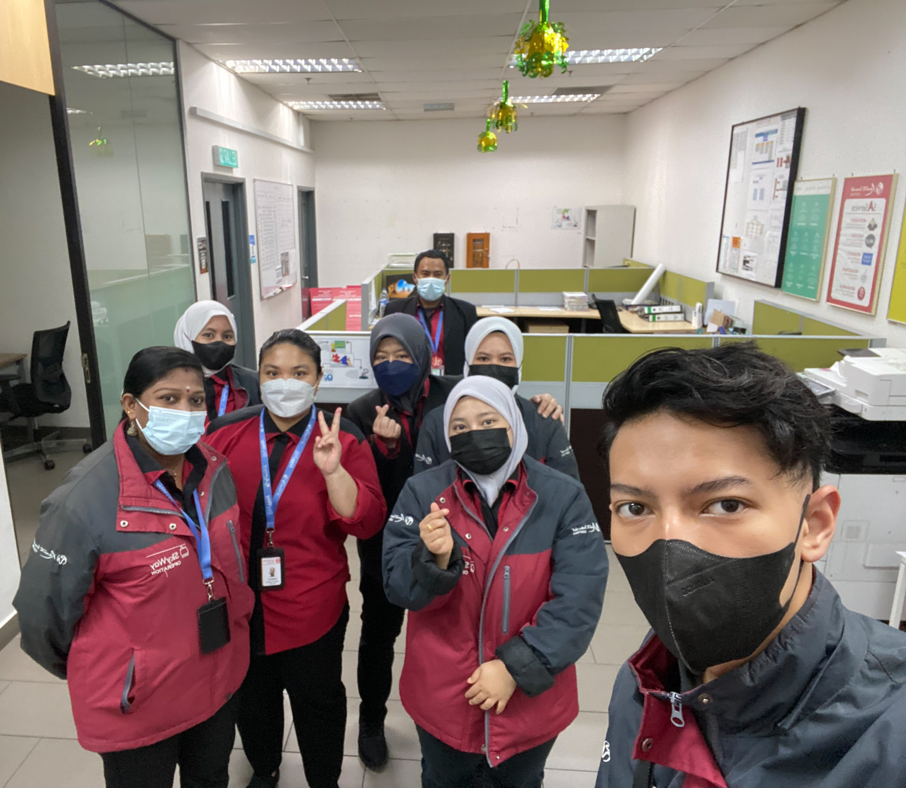

★ My Experience ★

Gunung Jerai Kedah
I joined a climbing group to the top of Mount Jerai in Kedah.
Exploring the beauty of nature is indeed wonderful
to be a part of life experience. It took around 51/2 hours to get their.

Genting Highland Pahang
I used to work there as a theme park assistant in the snow world
and skyway department.
Working there is very challenging because I have to deal
with extreme cold weather and many visitors.
I learned to communicate with
different types of customers from different foreign countries.
There my mind was open because of the experience I learned in social

Penang, Georgetown
I have not accidentally entered a photo contest in conjunction
with the launch of a new t-shirt brand. I only planned to accompany my friend who brought a Canon camera but I was pulled into one of the 5 groups. I only supply a
huawei android phone while all competitors use big cameras. I got a lot of knowledge from the group members and we won second place.